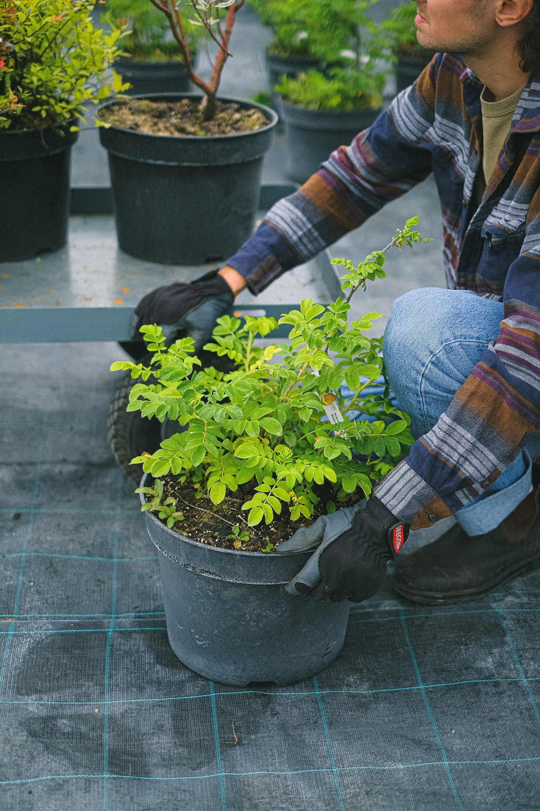

Inicio
Nosotros
Contacto
Nosotros
Ubicados en el corazon del Real de San Carlos en Colonia Del Sacramento somos una empresa familiar que se mantiene a lo largo de los años, trabajando con el mismo compromiso de calidad, respeto al medio ambiente.
Con mucha dedicación y seriedad, y aprovechando el gran desarrollo edilicio que conoció esta zona, fueron formando este vivero ornamental.
